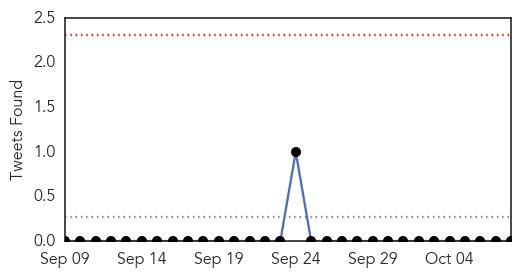
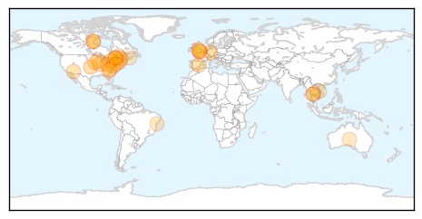
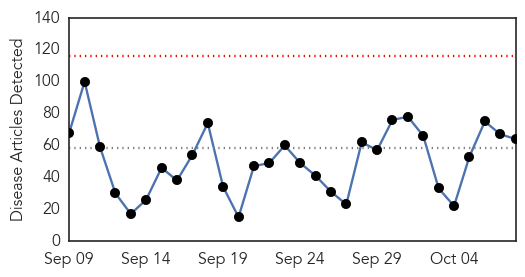

Influenza
30-Day Web Trend
8 alerts, 5 warnings

30-Day Twitter Trend
0 alerts, 0 warnings

Article Locations

Article Confidences

Top Articles:
- 0.998
- Doctors anticipate nasty flu season
- 0.993
- Low, Moderate Vaccine Efficacy Reported for 2013/14 Flu Season
- 0.992
- Medical experts tout flu shots
- 0.984
- KnightNews.com UCF Students Fight Flu Season with Free Flu Shots
- 0.980
- Lee Memorial staff, volunteers to receive flu shots - cape-coral-daily-breeze.com
- 0.973
- Urgent need for antiviral flu trials, say experts
- 0.962
- Vaccine expected to be better than last year — but you have to get shot
- 0.957
- City preschoolers will need flu shot to stay in class
- 0.941
- Flu drugs work and are needed during pandemics
- 0.941
- Ontario’s Former Chief Medical Officer: Flu Vaccine Not a Good Investment
- 0.930
- Ontario still promoting flu shots
- 0.928
- London’s Medical Officer Of Health: Getting Flu Vaccine A ‘No-Brainer’
- 0.927
- Three Rivers Public Health Department recommends getting a flu shot
- 0.920
- Strong and Kingfield Health Centers to offer flu clinics for MSAD #58 students
- 0.913
- Bird flu is important to us all
- 0.895
- Today's stories from newspapers in Flamborough
- 0.893
- Articles, event listings and opinion
- 0.893
- Articles, event listings and opinion
- 0.893
- Articles, event listings and opinion
- 0.855
- Letter To The Editor: The Budget Impasse Is Devastating Public Health Services In Illinois
- 0.841
- Bird Flu could make turkeys scarce for Thanksgiving
- 0.825
- US join hands to combat potential influenza outbreak
- 0.812
- US join hands to combat potential influenza outbreak
- 0.751
- October 8, 2015 Archives
- 0.751
- October 8, 2015 Archives
- 0.711
- Prepare to conduct flu trials in hospitals now, urge experts
- 0.691
- Today's stories from newspapers in Ottawa
- 0.691
- Today's stories from newspapers in Ottawa
- 0.691
- Today's stories from newspapers in Ottawa
- 0.691
- Today's stories from newspapers in Ottawa
- 0.681
- ON CAMPUS: Refreshing nursing skills
- 0.663
- Mass vaccination exercise planned
Top Tweets:
-
No tweets found for Oct 08, 2015
Unknown
30-Day Web Trend
0 alerts, 0 warnings

30-Day Twitter Trend
1 alerts, 0 warnings

Article Locations


Article Confidences

Top Articles:
- 0.997
- Japanese outbreak heightens awareness of Getah virus in horses
- 0.981
- CDC Hopes This Year’s Flu Shots Will Be More Effective
- 0.978
- EYES OPEN, PLEASE....
- 0.965
- Health Ministry to Continue Monitoring Schools Affected By Hand, Foot and Mouth Disease
- 0.937
- Health Ministry to Continue Monitoring Schools Affected By Hand, Foot and Mouth Disease
- 0.917
- Chicago Tribune
- 0.917
- Chicago Tribune
- 0.917
- Chicago Tribune
- 0.916
- AVOID THE FLU BY GETTING AN EARLY SHOT!
- 0.892
- Protect yourself from the flu
- 0.880
- Wyoming's First-Ever Case Of Human Rabies Ends In Death Of 77-Year-Old Woman
- 0.875
- Rare Diseases like Chagas and Leprosy are Becoming more Commonplace in the U.S.
- 0.868
- UN: Polio vaccines in Ukraine safe despite local concerns
- 0.866
- China to spend $1.5 bln to subsidize hospital reform in 2016
- 0.857
- Ethiopia takes step to eliminate river blindness
- 0.857
- Salmonella unmasked as major killer of young children in Africa
- 0.847
- Salmonella unmasked as major killer of young children in Africa
- 0.841
- UN: Polio vaccines in Ukraine safe despite local concerns
- 0.832
- Nasal-spray shortage means older students will get flu shots
- 0.831
- Salmonella unmasked as major killer of young children in Africa
- 0.830
- 12 hospitals that might make you sicker
- 0.821
- Second child sickened by E. coli after Oxford fair visit improves — Health — Bangor Daily News — BDN Maine
- 0.820
- State awaiting results of tests from Oxford fairgrounds as it investigates 2 E. coli cases
- 0.800
- Cambridgeshire health bosses lead the way in getting first flu jabs
- 0.788
- The surgery was successful but the patient died – make sure this isn’t you
- 0.786
- Deadly Food Poisoning Cases In 35 States Spread To Maryland Amid Recalls
- 0.784
- Gonorrhea treatments may lose effectiveness
- 0.765
- AstraZeneca Presents Respiratory Syncytial Virus (RSV) Study Results at IDWeek 2015
- 0.760
- South Bay Teen Battling Flesh-Eating Bacteria Undergoes 10th Surgery
- 0.751
- Natural Remedies For Cold & Flu For Kids
- 0.715
- Wyoming marks first known rabies fatality with death of woman, 77
- 0.707
- German prosecutors raid VW offices amid emissions probe
- 0.707
- Hero of French train attack Spencer Stone stabbed in California
- 0.707
- French far right’s Marine Le Pen clashes with Hollande
- 0.707
- Canadian PM Harper turns niqab into major campaign issue
- 0.707
- Brazil's Rousseff loses legal battle, faces impeachment threat
- 0.706
- Japanese encephalitis patients in Cordillera recovering
- 0.690
- Top Vector Control officials withdraw resignations
- 0.678
- Gov't dropped the ball on virus spread in schools, says Opposition
- 0.667
- Breaking the fever
- 0.664
- Costly Protection - KAUZ-TV: Newschannel 6 Now
- 0.655
- Photos: Preparing to keep children safe from extreme weather in the Pacific
- 0.652
- Profits for Haiti: Commercial Real Estate Experts Do Their Part to Help Survivors
- 0.645
- Malaria confirmed as cause of teacher’s illness
- 0.639
- WHO: Don't delay HIV treatment
- 0.637
- Mitsui Credit Global Comments as South Korea Cuts Rates On MERS
- 0.631
- New Case of Rabies Reported in Lane County
- 0.620
- Flu season is here; time to get your shot
- 0.619
- Health « ISN Blog
- 0.618
- Blog: Health Dept. gives flu shots
Showing top 50 articles...
Top Tweets:
- 0.723
- UK panel doesn't support use of flu drugs for regular cases of season flu but sees benefit for hospitalized cases. https://t.co/WrZqrwklVX